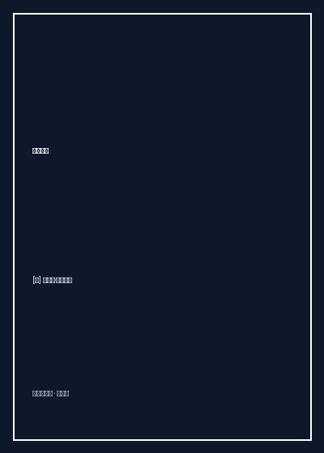

《钻石广场》

总体观点
战争与极权主义对人类社会最大的摧毁，不仅在于前线炮火对肉体的屠戮，更在于它无情侵入平民最隐秘的家庭空间，将爱情、母性与基本的生存尊严剥夺殆尽。
女主人公科罗梅塔阳台上的鸽群是压迫性父权与意识形态狂热的双重象征。起初它们被丈夫精心喂养繁殖并霸占整个居所，象征着女性被剥夺话语权的窒息；消灭鸽卵则象征着平民反抗压迫的隐秘觉醒。
小说通过朴素如溪水般流淌的加泰罗尼亚口语化独白，证明了真正的女性史诗无需宏大口号，以一粒盐、一根缝衣针、几块面包屑的坚忍与爱，便足以穿透最黑暗的独裁严冬。
核心观点
-
1. 微观生存与宏大浩劫：面包屑构筑的女性史诗
历史浩劫在前线是枪炮轰鸣，在后方平民母亲眼中则是空空如也的橱柜、生锈的面包刀和孩子浮肿的面庞，文学应记录肉身的真实痛感。
科罗梅塔独自在断粮的巴塞罗那街巷搜寻玉米粒与发霉面包，用井水灌饱腹部支撑两个孩子度过严冬。 -
2. 鸽笼的窒息象征：以爱为名的空间剥夺与规训
狂热的繁衍与控制往往以宏大理想与浪漫爱意的名义登场，当鸽群霸占整个屋顶与卧室时，女性的个人空间被蚕食殆尽。
丈夫乔将公寓所有通风口改造成鸽舍，漫天飞舞的鸽粪羽毛与咕咕声将科罗梅塔逼入精神窒息的绝境。 -
3. 绝境中的微茫善意：拉住自杀边缘的救命稻草
在绝望深渊中，陌生人微小而具体的善意往往能成为挽救一个濒死家庭的诺亚方舟，展现人性的温厚底色。
杂货店残疾店主安东尼不仅免除科罗梅塔欠下的面粉账单，更以克制尊重的求婚为母子三人撑起战后安宁庇护所。 -
4. 创伤的迟到哀悼：漫长如蜕皮的心理重建
和平与秩序的重建不仅需要庆典与集会，更需要历史幸存者在漫长岁月里独自抚平刻骨铭心的丧亲之痛。
战后多年儿女成年完婚后，白发苍苍的科罗梅塔在深夜独步钻石广场，在昔日旧居大门上用小刀刻下自己的乳名。 -
5. 质朴独白的诚实力量：反抗遗忘的最坚硬防腐剂
褪去辞藻修饰的平民口语内心自白具有击穿人心的纯粹力量，证明真实具体的生活细节最能抵抗政治遗忘。
小说通篇采用加泰罗尼亚口语短句叙述，如同邻家妇人在火炉旁倾诉一生际遇，被马尔克斯盛赞为西语文学瑰宝。
全书思维导图 · 知识脉络树
全书结构
-
第一部 鸽子与舞会：钻石广场上的金色阳光与乔的相遇
描绘内战前夕巴塞罗那恩典区钻石广场夏夜露天舞会的喧闹与浪漫，展现纯真少女娜塔莉亚与木工乔的相识与草率结合。
舞会上飞旋的白色裙摆与乔霸道地将她改名为'科罗梅塔'（加泰罗尼亚语意为小鸽子），埋下命运受制的伏笔。 -
第二部 筑巢与窒息：鸽笼蔓延的公寓与逼仄的生活牢笼
讲述婚后乔执迷于在公寓顶楼大规模养鸽，鸽粪、羽毛与持续不断的咕咕声渐渐将娜塔莉亚的精神逼至窒息绝境。
科罗梅塔忍无可忍在黑夜里悄悄溜进鸽笼，摇晃并破坏刚产下的鸽蛋，完成了人生第一次微弱而绝望的抗争。 -
第三部 战火蔓延：空袭警报、饥饿的前线与鸽群的消亡
西班牙内战爆发，乔奔赴前线作战，巴塞罗那陷入惨烈空袭与大饥荒，科罗梅塔独自艰难拉扯一双儿女在废墟中求生。
为了省下一口发霉的黑面包给饥饿垂死的孩子，她整天靠喝自来水充饥，乔的前线阵亡通知随之冷酷降临。 -
第四部 绝境与重生：杂货店老人的救赎与重归宁静的街巷
濒临自杀边缘的科罗梅塔遇到失去生育能力的残疾杂货店主安东尼，后者伸出援手接纳母子三人，带来迟到的安全庇护。
安东尼默默为她垫付赊欠的账单，并以极其克制尊重的态度向她求婚，给了这个濒死家庭重生的港湾。 -
第五部 迟来的平静：在岁月的刻痕中与过往亡灵告别
战后多年儿女成年完婚，科罗梅塔在深夜独自走回钻石广场，用一把小刀在昔日居所的大门上刻下自己的名字，完成与苦难历史的和解。
她在广场中央发出一声压抑了数十年的长啸，那一刻所有的鸽群阴影与战争噩梦终于随风散尽。 -
译后记：加泰罗尼亚的鸽子之歌与不可磨灭的女性声音
译者田智详尽介绍罗多雷达的流亡生涯与创作背景，评析小说在世界现代主义与女性文学中的崇高地位。
马尔克斯曾高度赞誉本小说为'西班牙内战后西语世界最优美的小说，没有之一'。